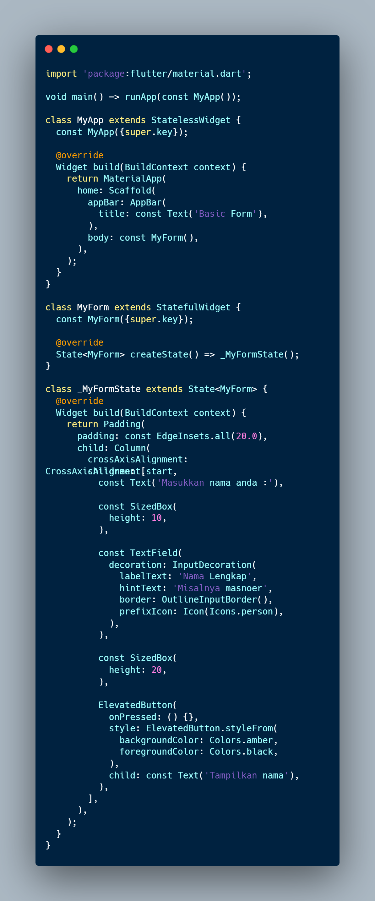
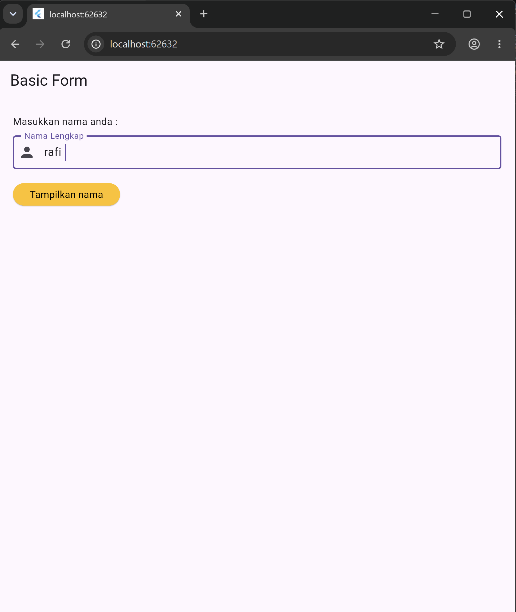
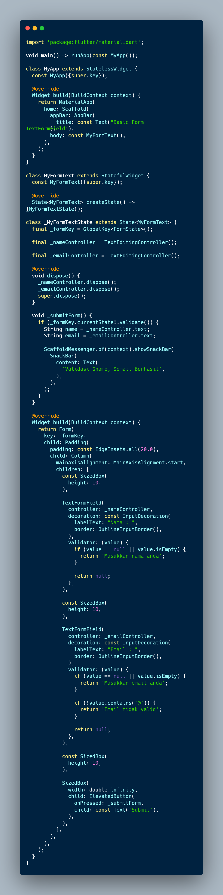
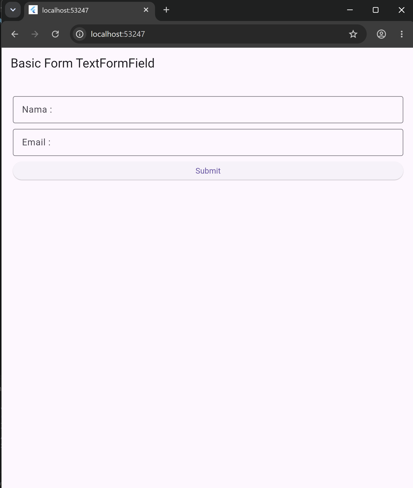
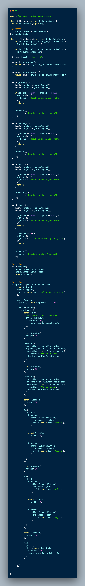
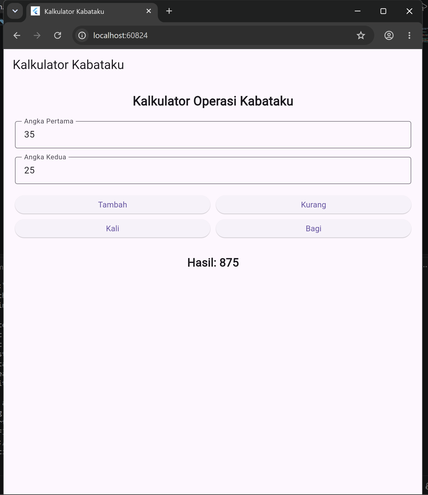

Input Widgets dan Basic Form — Flutter — Aplikasi Mobile
TextField · TextFormField · GlobalKey · Validasi Form · setState()
Praktikum ke-3 mata kuliah Aplikasi Mobile membahas tentang pembuatan Basic Form pada Flutter menggunakan berbagai widget inputan. Pada praktikum ini mahasiswa mempelajari cara menerima, mengelola, dan memvalidasi inputan dari pengguna menggunakan widget TextField dan TextFormField, serta memanfaatkan TextEditingController, GlobalKey<FormState>, dan setState() untuk mengontrol alur data pada aplikasi.
Tujuan dari praktikum ini adalah agar mahasiswa mampu:
TextField dan TextFormField.TextEditingController.GlobalKey<FormState> dan method validate().setState() untuk memperbarui tampilan pada StatefulWidget.const untuk optimasi performa widget.
Basic Form merupakan widget yang berfungsi sebagai inputan nilai pada Flutter, seperti TextField, TextFormField, CheckBox, Switch, Dropdown, Radio, Dialog, DatePicker, BottomSheet, Snackbar, dan lain-lain. Basic Form digunakan untuk validasi dan mengelola inputan dari berbagai field. Form akan memberikan tampilan inputan, kemudian inputan akan diperiksa apakah sudah sesuai dengan aturan atau format yang ditetapkan, selanjutnya data inputan akan diambil nilainya setelah proses pengecekan selesai dilakukan.
TextField adalah widget yang digunakan untuk memasukkan teks oleh pengguna. Widget ini biasanya digunakan untuk membuat form inputan seperti form login, pencarian, dan sebagainya.
Fitur utama TextField:
style, decoration, dan jenis inputan.TextEditingController.
TextFormField adalah widget versi lengkap dari TextField yang secara otomatis terintegrasi dengan logika validasi dan manajemen state dari sebuah Form.
Fitur utama TextFormField:
validator untuk memeriksa apakah input sudah sesuai dengan aturan yang ditentukan.FormState untuk melakukan validasi secara kolektif dengan method validate().
GlobalKey merupakan objek unik yang digunakan untuk mengidentifikasi dan mengakses state secara global, artinya kita dapat mengakses widget dari widget mana saja. FormState adalah kelas yang mengelola status dari Form, seperti status validasi setiap form inputan (TextFormField). Dengan menggunakan GlobalKey pada widget Form, kita dapat memanggil metode seperti validate() atau save() dari luar widget tersebut, biasanya dari onPressed pada ElevatedButton.
Metode validate() merupakan fungsi pada FormState yang digunakan untuk menjalankan validasi pada setiap TextFormField di dalam Form. Ketika _formKey.currentState!.validate() dipanggil, Flutter akan:
TextFormField yang terikat pada Form tersebut.validator yang telah didefinisikan pada setiap TextFormField.validate() akan menghentikan proses dan mengembalikan false. Pesan error akan ditampilkan di bawah TextFormField.null (tidak ada error), validate() akan mengembalikan true.
setState() merupakan sebuah method pada Flutter yang digunakan untuk me-rebuild ulang state yang ada pada StatefulWidget. Method ini memberitahu Flutter bahwa state telah berubah dan widget perlu di-rebuild. Contoh penggunaan:
const
Kata kunci const pada widget Flutter digunakan untuk membuat widget menjadi konstanta pada saat kompilasi (compile-time). Penggunaan const meningkatkan performa karena widget tersebut dibuat sekali dan disimpan di memori sehingga dapat digunakan kembali tanpa perlu di-build ulang setiap kali method build() dipanggil akibat perubahan state di widget lain.
| Aspek | Tanpa const |
Dengan const |
|---|---|---|
| Build ulang | Setiap kali build() dipanggil |
Hanya sekali saat kompilasi |
| Performa | Lebih lambat jika banyak widget | Lebih cepat & hemat resource |
| Memori | Instance baru setiap rebuild | Instance disimpan & digunakan ulang |
Buat file dart baru dengan nama form_textfield.dart di dalam folder lib pada project Flutter.
Buat tampilan basic form menggunakan widget TextField untuk inputan dan ElevatedButton untuk memberikan event listener. Isikan kode program berikut ke dalam file tersebut:

code Basic Form
Kode program tersebut merupakan implementasi form input sederhana menggunakan widget TextField pada Flutter. Program diawali dengan mengimpor library material.dart yang menyediakan berbagai komponen antarmuka Flutter. Fungsi main() digunakan sebagai titik awal untuk menjalankan aplikasi melalui widget MyApp. Class MyApp menggunakan StatelessWidget dan membangun struktur utama aplikasi dengan MaterialApp dan Scaffold. Pada bagian AppBar ditampilkan judul "Basic Form", sedangkan bagian body menampilkan widget MyForm. Widget MyForm menggunakan StatefulWidget dan memiliki _MyFormState untuk mengatur tampilan form. Isi form disusun menggunakan Padding agar terdapat jarak 20 pixel dari tepi layar, kemudian Column digunakan untuk menyusun komponen secara vertikal. Terdapat teks "Masukkan nama anda :" sebagai petunjuk kepada pengguna, kemudian widget TextField digunakan untuk menerima input nama lengkap. Tampilan TextField diatur menggunakan InputDecoration dengan labelText sebagai label "Nama Lengkap", hintText sebagai contoh input "Misalnya masnoer", OutlineInputBorder untuk memberikan garis tepi, serta prefixIcon untuk menampilkan ikon pengguna. Setelah kolom input terdapat SizedBox sebagai pemberi jarak dan ElevatedButton sebagai tombol "Tampilkan nama". Tombol tersebut diberi warna latar amber dan warna teks hitam, tetapi fungsi onPressed masih kosong sehingga belum melakukan proses terhadap nama yang dimasukkan. Secara keseluruhan, program ini digunakan untuk mempraktikkan penggunaan TextField sebagai widget input dasar dalam aplikasi Flutter.

Tampilan Basic Form dengan widget TextField dan ElevatedButton
Buat file dart baru di dalam folder lib dengan nama form_textformfield.dart.
Buat form inputan menggunakan 2 buah widget TextFormField (untuk Nama dan Email) dan 1 buah ElevatedButton. Isikan kode program berikut:

// Code Basic Form TextFormField
Kode program tersebut merupakan implementasi form input menggunakan TextFormField yang dilengkapi dengan validasi data pada Flutter. Program diawali dengan mengimpor library material.dart, kemudian fungsi main() digunakan untuk menjalankan aplikasi melalui widget MyApp. Class MyApp menggunakan StatelessWidget dan membangun struktur aplikasi dengan MaterialApp, Scaffold, dan AppBar yang menampilkan judul "Basic Form TextFormField". Bagian body menampilkan widget MyFormText yang dibuat menggunakan StatefulWidget.
Pada class _MyFormTextState, program menggunakan GlobalKey

// Tampilan awal Basic Form TextFormField dengan dua input field dan tombol Submit
Tugas praktikum kelas A adalah membuat Aplikasi Kalkulator menggunakan Flutter yang dapat menjalankan empat operasi aritmatika dasar (tambah, kurang, kali, bagi) — dikenal dengan istilah Kabataku.
Instruksi tugas:
TextField) untuk menerima nilai angka pertama dan angka kedua.ElevatedButton untuk setiap operasi Kabataku (Tambah, Kurang, Kali, Bagi).Text untuk menampilkan hasil operasi.setState() untuk memperbarui tampilan hasil setiap kali operasi dijalankan.
Berikut adalah kode program tugas Kalkulator Kabataku (kalkulator.dart):

// Code Kalkulator
Kode program tersebut merupakan implementasi kalkulator sederhana untuk melakukan operasi kabataku, yaitu penjumlahan, pengurangan, perkalian, dan pembagian menggunakan Flutter. Program dibuat dengan StatefulWidget agar hasil perhitungan dapat berubah sesuai input pengguna. Dua TextEditingController digunakan untuk mengambil nilai dari dua TextField, yaitu Angka Pertama dan Angka Kedua. Nilai yang dimasukkan kemudian dikonversi menjadi tipe double menggunakan double.tryParse(), sehingga program dapat menangani input angka maupun memberikan pesan "Masukkan angka yang valid" apabila input tidak sesuai. Terdapat empat method, yaitu _tambah(), _kurang(), _kali(), dan _bagi() yang masing-masing menjalankan operasi aritmatika sesuai tombol yang ditekan. Khusus pada operasi pembagian, program melakukan pengecekan terhadap angka kedua agar tidak bernilai nol dan menampilkan pesan "Tidak dapat membagi dengan 0" jika kondisi tersebut terjadi. Hasil perhitungan disimpan pada variabel _hasil dan diperbarui menggunakan setState() sehingga tampilan hasil pada widget Text ikut berubah. Pada bagian antarmuka, dua TextField digunakan sebagai input angka dan empat ElevatedButton digunakan untuk menjalankan operasi kabataku, sedangkan Row dan Expanded digunakan agar tombol tersusun secara horizontal dan memiliki ukuran yang seimbang. Method dispose() digunakan untuk melepaskan kedua controller setelah widget tidak lagi digunakan. Secara keseluruhan, program ini menerapkan TextField, TextEditingController, StatefulWidget, setState, ElevatedButton, dan operasi aritmatika untuk memenuhi latihan Kelas A berupa pembuatan kalkulator operasi kabataku.

// Tampilan Kalkulator Kabataku dengan 2 input angka, 4 tombol operasi, dan hasil ditampilkan via Text widget
Berdasarkan praktikum yang telah dilakukan, TextField dan TextFormField merupakan dua widget input utama pada Flutter yang memiliki perbedaan mendasar: TextField lebih sederhana dan fleksibel, sedangkan TextFormField terintegrasi langsung dengan sistem validasi Form melalui GlobalKey<FormState> sehingga lebih direkomendasikan untuk penggunaan dalam sebuah form yang memerlukan validasi.
TextEditingController terbukti menjadi jembatan penting antara widget input dan logika program, memungkinkan kita membaca nilai input kapan saja tanpa harus bergantung pada event tertentu. Penggunaan GlobalKey<FormState> bersama method validate() mempermudah validasi banyak field sekaligus dalam satu method — jika ada satu field yang tidak lolos validasi, seluruh proses submit dihentikan dan pesan error ditampilkan langsung di bawah field yang bersangkutan.
Keyword const sebaiknya diterapkan pada widget yang tidak bergantung pada state yang berubah, karena hal ini mencegah rebuild widget yang tidak perlu dan berdampak positif pada performa aplikasi. Secara keseluruhan, pemahaman tentang Basic Form merupakan fondasi penting dalam pengembangan aplikasi mobile Flutter karena hampir setiap aplikasi memerlukan mekanisme penerimaan dan validasi inputan dari pengguna.